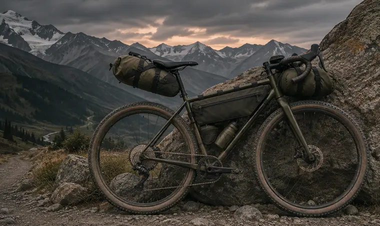

Маршрут и посадка
Сравните геометрию нужного размера с велосипедом, на котором вам удобно. Для сложных троп рассмотрите MTB-платформу, для асфальта и грейдера — гравийную или туристическую.
Подбор велосипеда и деталей для поездок с багажом.
«Палатку взяли. А место для велосипедиста оставили?»
Подобрать сборку
ВЫПУСК ОТ
Дропбар для бездорожья, новый Polygon Tambora и сумки для первых выездов с ночёвкой.
ПОДБОР РАМЫ
/
«Найти на Pinduoduo» открывает поиск по модели. Для просмотра результатов может потребоваться вход.

ДЛЯ ЛЬВА
Велосипед, который выглядит так, будто вышел из веломастерской в 1967-м.
Эскиз для Льва. Ростовка и комплектация подбираются отдельно.

ПЕРЕД СБОРКОЙ
Сравните геометрию нужного размера с велосипедом, на котором вам удобно. Для сложных троп рассмотрите MTB-платформу, для асфальта и грейдера — гравийную или туристическую.
Проверьте клиренс с выбранным ободом, стандарты осей и каретки, совместимость вилки, тормозов и трансмиссии.
Уточните крепления и допустимую нагрузку. Каталог включает архивные модели и платформы от серийных велосипедов. Наличие рамы отдельно и комплектацию проверяйте у производителя.